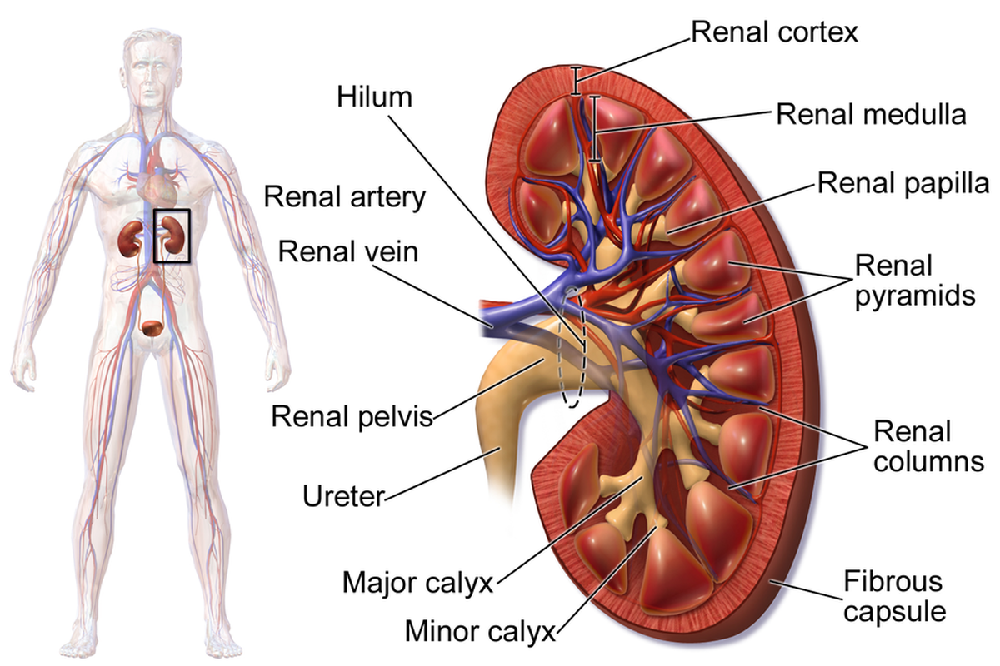
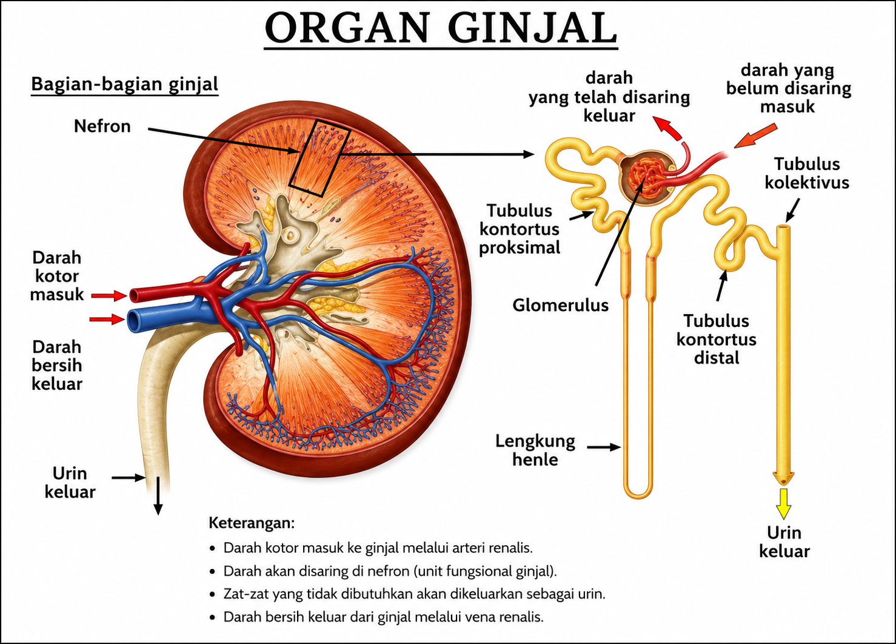

Ginjal
Ginjal adalah organ penting yang menjadi bagian utama sistem pengeluaran urin pada manusia. Manusia memiliki sepasang ginjal berukuran sekitar 10 cm yang berada di rongga perut, di sebelah kiri dan kanan ruas tulang pinggang. Ginjal bertugas menyaring sisa metabolisme dari darah, menjaga kadar udara tubuh, mengeluarkan gula berlebih, serta menyeimbangkan kadar asam, basa, dan garam di dalam tubuh.
Ginjal adalah organ berbentuk seperti kacang merah yang merupakan bagian utama dari sistem ekskresi (pembuangan) dan sistem urinaria pada manusia dan hewan vertebrata. Secara sederhana, ginjal adalah "pabrik penyaring" atau "filter" canggih di dalam tubuh kita. Tugas utamanya adalah membersihkan darah dengan cara membuang zat-zat sisa yang tidak berguna dan kelebihan cairan, lalu mengubahnya menjadi urin (air kencing).
Bayangkan ginjal Anda seperti saringan teh. Saat menyeduh teh, air panas (darah) dituangkan ke dalam cangkir yang berisi teh. Saringan akan menahan daun teh (sel darah dan protein yang dibutuhkan), tetapi membiarkan air teh yang sudah berasa (cairan sisa metabolisme) lolos. Air teh yang sudah terkumpul inilah yang kemudian menjadi urin dan dibuang.
a. Struktur Ginjal
Jika ginjal dibelah secara vertikal (koronal), akan terlihat dua lapisan utama dan rongga:
1. Korteks Renalis (Lapisan Kulit):
- Bagian luar yang berwarna cokelat kemerahan dan berbutir.
- Tempat di mana sebagian besar nefron (unit fungsional ginjal) berada, tepatnya korpuskel ginjal.
- Teksturnya granular karena banyaknya kapiler dan tubulus.
2. Medula Renalis (Lapisan Sumsum):
- Bagian dalam yang lebih gelap dari korteks.
- Tersusun atas struktur berbentuk kerucut yang disebut Piramida Ginjal (Piramida Renalis).
- Basis piramida menghadap ke korteks, dan ujungnya (apeks) yang disebut Papila Renalis menghadap ke rongga ginjal.
- Di antara piramida ginjal, terdapat jaringan korteks yang menjorok ke dalam yang disebut Kolumna Renalis (Kolom Bertini).
3. Pelvis Renalis (Rongga Ginjal):
- Rongga berbentuk corong di bagian paling dalam.
- Ujung papila renalis bermuara ke struktur kecil berbentuk cawan yang disebut Kaliks Minor. Beberapa kaliks minor bergabung membentuk Kaliks Mayor. Semua kaliks mayor kemudian bersatu membentuk pelvis renalis.
- Pelvis renalis akan menyempit dan keluar dari ginjal sebagai Ureter, yaitu saluran yang membawa urin menuju kandung kemih.

Gambar: Struktur Ginjalsumber: https://www.kompas.com/sains/read/2022/03/04/210000023/mengenal-struktur-ginjal-dan-fungsinya
b. Fungsi Ginjal
Lebih dari sekadar menyaring, ginjal memiliki peran vital lainnya:
- Menyaring Darah: Setiap menit, sekitar 1-1,5 liter darah mengalir melalui ginjal untuk dibersihkan dari racun seperti urea (dari pemecahan protein) dan kreatinin (dari kerja otot).
- Menjaga Keseimbangan Air (Cairan): Ginjal menentukan berapa banyak air yang harus dibuang atau disimpan. Saat kita banyak minum, ginjal menghasilkan urin yang encer. Saat kita dehidrasi, ginjal menghemat air dengan membuat urin yang lebih pekat.
- Mengatur Keseimbangan Elektrolit: Ginjal menjaga kadar garam (natrium), kalium, dan kalsium dalam darah tetap stabil. Keseimbangan ini penting untuk fungsi saraf dan otot.
- Menjaga Keseimbangan Asam-Basa (pH): Ginjal membantu menjaga pH darah tetap netral dengan membuang kelebihan asam atau basa melalui urin.
Ø Struktur mikroskopis atau strutur dalam ginjal terdiri dari:
1. Nefron adalah unit fungsional terkecil dari ginjal. Setiap ginjal manusia memiliki sekitar 1 juta nefron. Nefron terdiri dari dua komponen utama:
a. Korpuskel Renalis (Badan Malpighi): Tempat filtrasi darah. Terdiri dari:
- Glomerulus: Anyaman kapiler darah tempat darah disaring.
- Kapsula Bowman: Struktur seperti cangkir yang membungkus glomerulus. Hasil filtrasi dari glomerulus akan ditampung di ruang kapsula Bowman.
b. Sistem Tubulus: Saluran panjang tempat proses reabsorpsi dan sekresi terjadi. Urutan aliran cairan (urin) setelah dari kapsula Bowman adalah:
- Tubulus Kontortus Proksimal (TK Proksimal): Bagian berkelok-kelok di korteks.
- Lengkung Henle (Loop of Henle): Bagian lurus berbentuk "U" yang menjorok turun ke medula dan naik kembali ke korteks. Terdiri dari segmen desenden dan asenden.
- Tubulus Kontortus Distal (TK Distal): Bagian berkelok-kelok di korteks setelah lengkung Henle.
- Tubulus Pengumpul (Duktus Kolektivus): Beberapa TK distal bergabung ke tubulus pengumpul. Tubulus ini akan turun kembali ke medula dan bermuara di papila renalis untuk mengalirkan urin ke kaliks.

Gambar: Struktur Dalam Ginjalsumber: https://www.indonesiare.co.id/en/article/gagal-ginjal-akut
c. Proses Pembentukan Urin
Proses pembentukan urine di dalam ginjal melalui tiga tahapan. Ketiga tahapan tersebut adalah tahap filtrasi, tahap reabsorpsi, dan tahap augmentasi.
1. Proses Filtrasi (Penyaringan)
Sebelum urin terbentuk, tubuh perlu menyaring darah untuk memisahkan zat sisa metabolisme dari zat yang masih berguna. Langkah awal yang sangat krusial ini terjadi di dalam bagian ginjal yang berfungsi sebagai unit penyaring utama, dan terletak di Glomerulus yang merupakan kumpulan pembuluh darah kecil yang terletak di dalam kapsul Bowman.
Dalam tahap ini, tekanan darah yang tinggi mendorong cairan dari pembuluh darah keluar menuju saluran ginjal. Hasil dari penyaringan ini disebut sebagai urin primer atau filtrat glomerulus, yang masih mengandung air, glukosa, asam amino, dan garam mineral, namun sudah bebas dari sel darah dan protein besar.
Proses filtrasi (penyaringan) terdiri dari beberapa tahapan yaitu :
- Darah masuk ke glomerulus melalui arteriol aferen.
- Tekanan darah yang tinggi di glomerulus memaksa air, ion-ion kecil (Na+, K+, Cl-, glukosa, asam amino), dan limbah (urea, kreatinin) untuk keluar dari kapiler glomerulus menembus membran filtrasi.
- Hasil filtrasi ini disebut filtrat glomerulus atau urin primer, yang komposisinya mirip plasma darah tanpa protein (karena sel darah dan protein berukuran besar tidak bisa lolos).
- Laju Filtrasi Glomerulus (LFG/GFR): Volume filtrat yang terbentuk per menit. Normalnya sekitar 120-125 mL/menit. Ini adalah indikator penting kesehatan ginjal.
2. Proses Reabsorpsi (Penyerapan Kembali)
Setelah darah disaring, cairan yang dihasilkan ternyata masih mengandung banyak zat berharga yang tidak boleh terbuang percuma dari tubuh. Oleh karena itu, tubuh akan menarik kembali zat-zat penting tersebut masuk ke dalam aliran darah melalui dinding saluran ginjal. Proses ini terjadi di sepanjang tubulus ginjal, dengan aktivitas paling intensif berada di bagian Tubulus Kontortus Proksimal (TKP).
Pada tahap ini, zat-zat seperti glukosa, asam amino, serta sebagian besar air dan ion (seperti natrium dan klorida) diserap kembali. Hasil akhir dari proses ini adalah urin sekunder atau filtrat tubulus, yang memiliki konsentrasi zat sisa metabolisme (seperti urea) yang lebih tinggi dibandingkan sebelumnya.
Proses Reabsorpsi (Penyerapan Kembali) terdiri dari beberapa tahapan yaitu:
- Filtrat yang mengalir di tubulus mengandung banyak zat yang masih dibutuhkan tubuh.
- Zat-zat penting seperti glukosa, asam amino, vitamin, dan sebagian besar air dan ion (Na+, Cl-) diserap kembali dari cairan tubulus ke dalam pembuluh darah kapiler peritubuler (jaringan kapiler yang mengelilingi tubulus).
- TK Proksimal bertanggung jawab atas reabsorpsi 65-70% air dan natrium, serta hampir semua glukosa dan asam amino.
- Lengkung Henle berperan dalam memekatkan urin melalui mekanisme penukar arus berlawanan (countercurrent multiplier).
- TK Distal dan Duktus Kolektivus melakukan reabsorpsi air dan ion yang diatur oleh hormon (ADH dan Aldosteron).
- Hasil reabsorpsi disebut urin sekunder.
3. Proses Augmentasi (Pengeluaran Zat Tambahan)
Setelah melalui tahap penyerapan kembali, urin sekunder akan melewati tahap akhir untuk memastikan bahwa tubuh benar-benar bersih dari zat-zat yang tidak diperlukan atau bahkan berbahaya. Pada tahap ini, tubuh secara aktif membuang sisa obat-obatan, kelebihan ion hidrogen, dan zat sisa lainnya yang masih tertinggal di dalam darah untuk dicampurkan ke dalam urin.
Augmentasi merupakan fase penambahan substansi yang tidak diperlukan oleh organisme ke dalam tubulus kontortus distal, yang juga dikenal sebagai istilah sekresi tubular. Dalam mekanisme ini, sel-sel tubulus mentranspor ion hidrogen (H+), amonia (NH3), serta ion kalium (K+) menuju lumen tubulus melalui proses difusi. Akumulasi ion-ion tersebut kemudian berintegrasi dengan urine sekunder. Secara fisiologis, sekresi ion hidrogen memegang peranan krusial dalam meregulasi stabilitas derajat keasaman (pH) di dalam darah (Irdalisa, 2021).
Setelah melalui ketiga proses tersebut, cairan yang tersisa di tubulus pengumpul adalah urin sesungguhnya (urin final). Urin akan dialirkan ke pelvis renalis, lalu ke ureter, dan ditampung di kandung kemih sebelum dikeluarkan.

{kind=link}